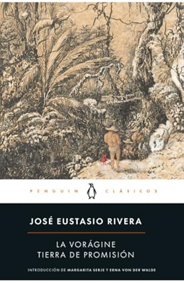

La vorágine / Tierra de promisión
Reseña por Jorge I. Zuluaga

Ver reseña en GoodReads (necesita cuenta)
Pues bien, efectivamente, casi nada nuevo. Excepto lo que yo personalmente pienso de ella. Que, claro, no es muy importante para la mayoría; excepto para mi yo futuro, la personas que mientras lee estás líneas es consciente que ha olvidado los más fantásticos pasajes de esta obra, y a quién va dirigida, en últimas, todo lo que escribo por aquí.
Hace mucho había conseguido un ejemplar de la novela porque sabía que la tenía entre mis deudas literarias. Creo que muchas personas que nos educamos en Colombia, la tuvimos entre los textos de obligatoria lectura en algún momento de nuestras vidas. Yo no recuerdo si leí partes o la totalidad de la novela en algún momento, pero recuerdo muy bien que a mi hija Sofía, apenas hace unos años, la obligaron, al menos, a conseguir el libro como parte de los útiles en los últimos grados de secundaria (ese fue nuestro segundo ejemplar de la Novela).
En 2023, cuando Penguin Random House sacó la edición conmemorativa, decidí adquirir una nueva copia (la tercera) para ver si esto me animaba finalmente a leerla. Otra vez, sin embargo, me pudo la procrastinación y el libro quedo enterrado entre los cientos de por-leer de mi biblioteca.
El incentivo final llego hace unas dos semanas cuando una buena amiga de la Universidad de Antioquia me pregunto si por casualidad había leído "La Vorágine". Estaban buscando impresiones en video de personas que la hubieran leído para hacer un especial para las redes de la Universidad sobre la obra. Esa era mi oportunidad: leer La Vorágine y aparecer en un video con personas más reconocidas que yo (guiño, guiño).
Con la fama como incentivo le metí finalmente el diente a la obra de José Eustasio Rivera y no me arrepiento de hacerlo.
Pero el golpe no demoro en llegar. ¿Qué retos puede ofrecer una novela escrita por un poeta colombiano -un país que se caracteriza por ser la cuna de gramáticos y estudiosos de la lengua- de principios del siglo XX?. ¡Iluso yo!
El primer y el más complicado reto fue la lengua. La Vorágine está escrita en un español que mezcla expresiones idiosincrásicas de nuestro país y el más elaborado español del siglo de oro. En ocasiones me sentí leyendo un libro de coplas llaneras para, a la página siguiente, verme transportado a un aparte de El Quijote.
De una vez les advierto -o te advierto, querido yo futuro- que este es un libro para leer con un diccionario en la mano. La edición conmemorativa de Penguin trae al final un útil glosario, que puede ser de mucha utilidad, aunque en su mayoría contiene expresiones y palabras muy usadas en Colombia y que conocemos bien quiénes crecimos aquí. El verdadero problema está es en las palabras más castizas. Ya lo verán.
El segundo reto que se debe superar para leer toda "La Vorágine" es el de entender que la novela no es, como creo pensamos la mayoría -o al menos aquellas personas que no recordamos nada de nuestras lecturas juveniles obligatorias-, un libro de aventuras en la selva amazónica. En realidad casi la mitad de la historia se desarrolla en los Llanos Orientales. Esto no le quita, sin embargo, una pizca de interés a los hechos que se narran allí, pero te enfrenta al tercer y último reto (de esta lista arbitrariamente personal de retos que he compilado aquí): entender los diálogos que se desarrollan entre los personajes propios de esta región del país. ¡Que cosa más verraca!
Me impresiono mucho -y me obligo a releer muchos apartes- el hecho de que una persona con un uso tan exquisito de la lengua como Rivera, inventara diálogos con una ortografía que podríamos llamar aporreada; una que trata de imitar, de forma muy realista por cierto -Rivera tuvo la oportunidad de viajar por estas zonas del país- las formas de hablar de la gente llanera (y de otras partes del país) que aparecen en la novela.
En los diálogos te encuentras con frecuencia frases como "Güele a muje, güele a muje" , "Eso no tié náa de malo", "¿pero qué jué a hacé ayá la noche que yegaron estos blancos". Si no lees estos diálogos en voz alta, no entiendes casi nada. Así que preparen su mejor acento llanero y aléjense de compañía para poder leer, al menos, una buena parte de la Vorágine.
Ahora bien, no es que vea nada de malo en lo que hizo Rivera -pero "que ijuemadre chachara más berraca de leé"; al contrario, ahora pienso en la cantidad de diálogos que he leído en otras novelas y que le dan voz a personas sencillas como si hablaran un español sin tachas. ¡Me gusta más el realismo lingüístico de Rivera!
Después de transcurrida una buena parte de la aventura de Arturo Cova -el protagonista- y de su compañera Alicia Hernández en los llanos orientales, al fin llegamos a los ríos y a la selva, donde los protagonistas se enfrentan a La Vorágine. Digo "al fin", sin casi pensar en el dramatismo de las situaciones que se relatan en esta parte de la obra y que son el corazón mismo de "La Vorágine".
Los capítulos de esta segunda mitad del libro empiezan siempre con reflexiones, descripciones o recuerdos sobre la selva y la vida en ella, magistralmente escritos por Rivera. Estos textos justifican, sin duda alguna, superar los retos mencionados antes y leer la novela completa.
Como deben saber por la descripción en la contraportada -y por la reconocida fama de la novela- "La Vorágine" divulga, en código literario, los dramas humanos que vivieron miles de personas que fueron esclavizadas por décadas, durante finales del siglo XIX y principios del siglo XX, por empresas privadas y mafias organizadas, para extraer el caucho de las selvas del Amazonas y la Orinoquía. La novela retrata con precisión las indecibles condiciones de vida que vivieron los denominados siringueros, hombres, mujeres y niños, en su mayoría indígenas, que, engañados con supuestos créditos para adquirir productos "novedosos" o simplemente capturados y esclavizados por ejércitos de hombres violentos en lo profundo de las selvas de Colombia, Brasil y Perú.
El realismo con el que Rivera refleja esas condiciones y las terribles lógicas que dominaban las relaciones de explotación entre todos los implicados en este "genocidio", es simplemente espectacular o, más precisamente, perturbadoramente magistral.
Si leen la edición conmemorativa, no dejen de ver los mapas al final del libro. Sirven para orientarse en los muchos lugares, especialmente en ríos, alrededor de los que se desarrollan la mayoría de las aventuras sufridas por los protagonistas de la novela. Igualmente excelente es el estudio preliminar que, sin embargo, recomiendo leer solamente al final para evitar los spoilers.
Quedo con sentimientos encontrados.
Por un lado -empecemos por lo bueno- me alegra mucho haber leído por fin "La Vorágine". Ha sido realmente delicioso disfrutar, por perturbadoras que sean, las excelsas páginas de buena literatura que nos legó Rivera.
Por otro lado, me queda este sentimiento de dolor por las miles, tal vez decenas de miles de vidas, inútilmente desperdiciadas en la selva por muchas décadas; explotadas con saña para enriquecer a unos pocos, incluso a empresas que prosperan bajo la fachada del Estado de derecho. Lo peor es saber que, muy a pesar de increíbles y muy conocidos trabajos de divulgación que han hecho obras como está novela, este tipo de dramas humanos siguen y, tal vez, seguirán reproduciéndose. A principios del siglo XX fue el caucho en las selvas de Suramérica; después llegó la Coca en las montañas de Colombia, con sus guerrillas traficantes y paramilitares genocidas; en otras partes continentes son los minerales de las montañas o el oro de las minas.
¿Qué vendrá en el futuro? ¿Cuántas "Vorágines" habrá que escribir para que unos pocos humanos no sigan enriqueciéndose con los dramas invisibles de miles? ¡muy duro!